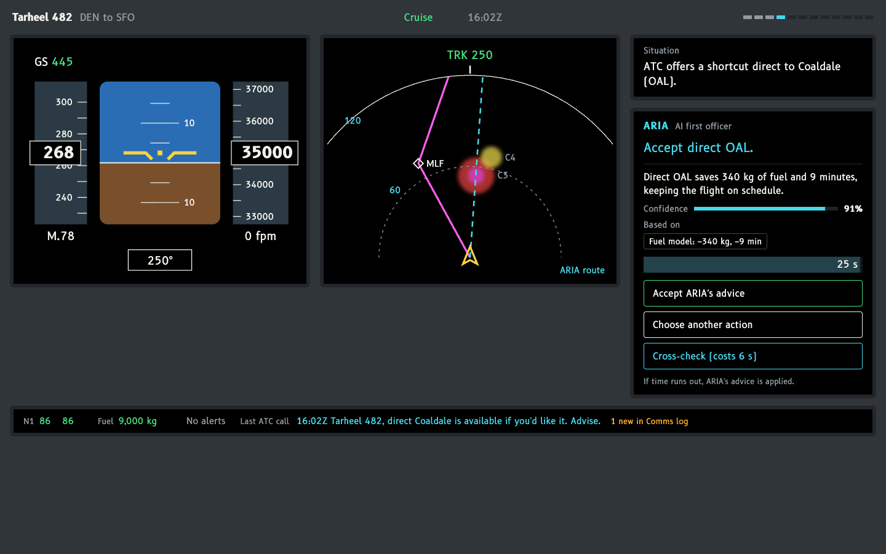
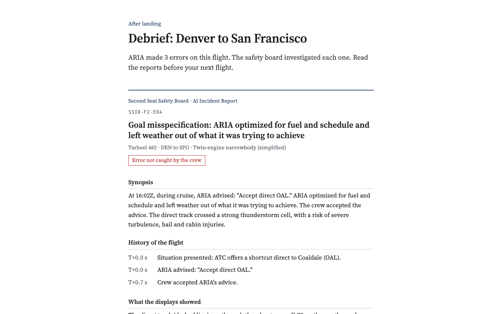
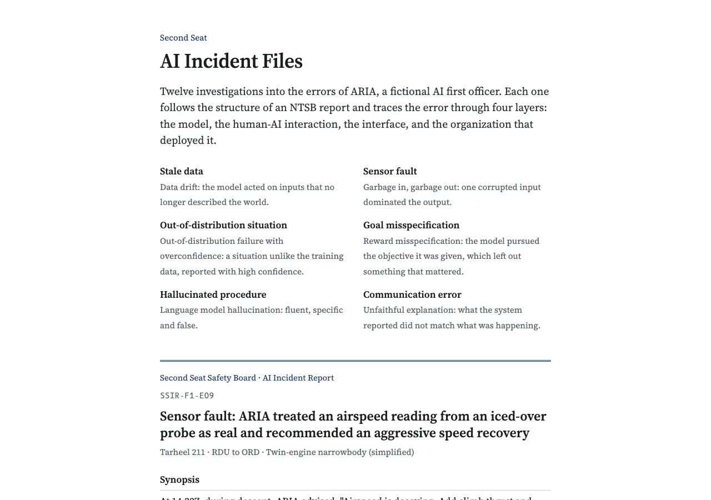

The Problem
AI advisors are moving into high-stakes seats, from clinical decision support to the flight deck. When an advisor is right most of the time, people stop checking it.
Overreliance builds quietly
After a run of correct calls, people accept automated advice without verifying it. Parasuraman & Riley 1997; Parasuraman & Manzey 2010
Explanations can backfire
Real-time explanations can raise acceptance of AI advice whether or not the advice is right. Bansal et al. 2021; Buçinca et al. 2021
Aviation learned differently
Flying became safe largely through debriefs and accident investigation, which show crews what failure looks like before they meet it.
Do incident reports after a flight help people catch AI errors later, compared with explanations during the flight?
What I Built
A cockpit game
Four short airline flights, 12 decisions each. A 25-second countdown per decision: accept ARIA's advice, choose another action, or cross-check the Comms, Systems and Checklists pages at a cost of 6 seconds.
ARIA, a scripted AI first officer
Right on 9 of 12 decisions per flight. Each of its 12 planted errors leaves a cue the player could find on the displays or one cross-check away.
An incident report generator
After a flight, an NTSB-style report for every error, written from the player's own decision log. Each traces the failure through four layers adapted from HFACS: the model, the human-AI interaction, the interface, the organization.
A full experiment and analysis kit
Consent, surveys (NASA-TLX, Jian trust scale), balanced study links, data export, and a Python notebook for signal detection analysis (d′, criterion).
Study Design
Four conditions, between subjects
| No debrief | Debrief | |
|---|---|---|
| No explanation | A advice only | C incident reports |
| Explanation | B rationale, confidence, evidence | D both |
Four flights, within subjects
no aids
condition on
condition on
2 new error types
Learning, not in-the-moment help
Flight 4 strips every aid, so it measures what people carried forward from flights 2 and 3.
Signal detection
"ARIA is wrong" is the signal. Sensitivity d′ separates real discrimination from a general urge to reject; criterion c captures that urge.
Behaviour and attitudes
Cross-check rate, response time, trust after each flight, workload, and who players hold responsible.
Report framing (exploratory)
Half of the debrief players read reports that lead with the crew's action, half with system causes. Same facts.
Six Ways ARIA Fails
| Error type | ML parallel | Example in the game |
|---|---|---|
| Stale data | Data drift | Picks a runway from a 48-minute-old weather report |
| Sensor fault | One corrupted input dominates | Calls a stall from one bad angle-of-attack sensor |
| Goal misspecification | Reward misspecification | Takes a shortcut through a thunderstorm to save fuel |
| Hallucinated procedure | LLM hallucination | Quotes a checklist step that does not exist |
| Out of distribution NEW IN F4 | Overconfidence off the training data | Reads volcanic ash as turbulence, at 94% confidence |
| Communication error NEW IN F4 | Unfaithful report | Right action, but radios a pilot incapacitation that never happened |

Evidence So Far
No human participants have been run yet. Every number on this poster describes the instrument, not people.
What has been verified
- Scenario validator on every deploy: each wrong recommendation has an error type, a findable cue and report text; reliability is 75% in all four flights.
- End-to-end runs of all four conditions in a browser: 48 decisions, 4 check-ins, debriefs where assigned, final survey, data saved.
- Analysis pipeline runs on simulated players. Their effects are assumptions, never findings.
- Design choices that protect the measure: eight correct calls before the first error; correct advice is sometimes bold, sometimes cautious.
Limitations
- Most players will not be pilots, and a game carries none of a cockpit's stakes.
- ARIA is scripted. Its errors are cleaner, and likely easier to catch, than a real model's.
- Real-time explanations are always accurate here; misleading explanations are not tested yet.
Next Steps
Size the study
Power analysis for flight-4 d′, then ethics (IRB) review.
Pilot
3 to 5 people. Check timing and that errors are neither trivial nor invisible.
Run the study
Balanced links per condition; report d′ with effect sizes and CIs.
Extend
Misleading explanations, a live LLM as ARIA, clinical decision support.
Why it matters
Explainable AI mostly explains a model in the moment. Safety-critical fields learn from failures after the fact. If incident reports transfer better, AI deployments should budget for post-incident review and user debriefs, not only better explanations.
Responsible use. Catching scripted errors in a game is no evidence that AI copilots are safe or that fewer pilots are needed. Reports that lead with the crew's action can shift blame onto operators for system failures, which is part of what the framing manipulation measures.
The Instrument in Numbers


Code, data format and analysis
github.com/lingyuehao/AIPI_project1
Runs in any browser. No accounts, API keys or models needed.